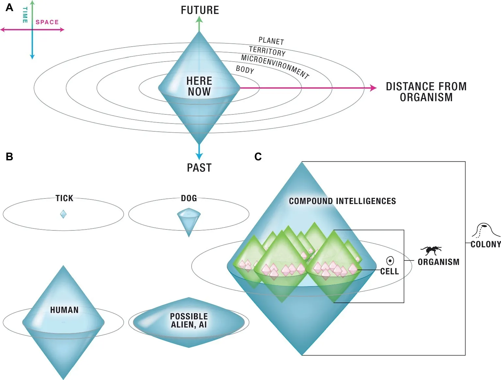

前回、菌類において、ネットワークが個体に先行するという転倒を見た。菌糸融合（anastomosis）により境界は融解し、個体に戻るという状態が原理的に存在しない。そして菌糸先端（hyphal tip）から見ると多数体、ネットワークから見れば一つの連続した実体。観察のスケールによって、同じ菌糸が異なる「単位」として現れてしまう。
シェルドレイクは、この事態に対して「複数のメタファーを同時に保持する」という認識論的立場を選んだ。しかし、われわれがプロジェクトを知能として考えるためには、知性を発揮する主体について理解する必要がある。シェルドレイクがわれわれに残したのは「自己とは何か」「散らばった局所的な探索がいかに一つの振る舞いを生むのか」という２つの問いであった。
この問いに、まったく違う角度から答えを試みているのが発生生物学者マイケル・レヴィンである。もともとプラナリアやアフリカツメガエルなどで、形態形成における細胞間の電気的シグナル（生体電気）を研究してきた彼は、やがて細菌から細胞、組織、器官、動物、群れ、そしてAIに至るまで、あらゆる認知主体を比較することを試みている。先の２つの問いに同時に答えてしまう鋭さを持っている彼の議論を、順に辿ってみよう。
まず第一に「自己とは何か」。レヴィンは「認知の光円錐（cognitive light cone）」というメタファーを使って自己という単位を捉え直そうとしている。物理学では、ある時空の一点から因果的影響が及ぶ範囲を「光円錐」という円錐形の幾何で表す。光を認知と読み替えれば、認知の到達範囲も同じ形で描けるというわけだ。このとき光円錐は「システムが時空間においてどこまでの目標を追求できるか」を示す。

{kind=link}
例えば、ダニはごく小さな認知の光円錐を持つ。記憶も、予測能力もほぼなく、感知と行動は自分のすぐ近くに限られる。犬は、かなりの記憶と短い予測能力が加わり、行動の射程も広がるが、「来週都内で何が起きるか」を気にかけることは犬にはできない。人間はずっと大きな光円錐を持つ。数十年スパンの記憶、惑星規模に及ぶ目標、種の存続といった抽象的な状態にすら関心を向けることができる。同じ「認知」というラベルがついていても、扱える時空間のスケールが連続的に異なるというのがレヴィンの提案である。
この見方は、知能を発揮するのが「どんな単位か」から「どんな動きか」へと問いを変換していると言えるだろう。彼は「自己は、入れ子状になり、重なり合うことができる」とすら述べている。つまり、同じ生物学的物質が、異なる認知境界を持つ複数の「自己」を同時に支えうるということである。群れ、その中の個体、彼らの臓器、細胞内の代謝・転写ネットワーク。それぞれが固有の認知境界を持ち、独立した目標を追求している。「単位を一つに決めない」という意味では、シェルドレイクの「複数のメタファーを保持する」という姿勢と通じる一方で、レヴィンはその複数性を分離せず、むしろ同じスケールに乗せようと試みている。
彼によれば、ここで拡張されているのが、まさに「知性」である。知性とは「同じ目標へ異なる手段で到達する能力の度合い」であるというウィリアム・ジェームズの定義に従うならば、「認知の光円錐」が大きいほど「異なる手段」を取れる可能性が広がるからである。例えば、ある磁石は別の磁石に向かって動くといった明確な「目標志向」の振る舞いを示す。しかしその間に障害物を置くと、磁石はその場で止まってしまう。回り込むことができないからだ。一方、知性を持つシステムは、目標を保持したまま時空間を「見渡し」、別の経路を探すことができる。集団知性とは、こうして単独の主体を束ねることで「見渡し」の範囲（空間的・時間的に何を感知し、思い出し、予測できるか）をずっと広げられる能力のことなのだ。
このジェームズ的な知性が、束ねられたコレクティブにおいて実際に発揮されることを示すのが、レヴィンの研究室が行ったプラナリア（淡水性の扁形動物）の実験だ。プラナリアにバリウム（彼らが進化史で出会ったことのない毒）を与えると、頭部の電気的恒常性が破綻して頭が爆発してしまう。「機能する頭部を持つ」という目標を達成するための標準ルートが、ここで塞がれたことになる。ところが、再生能力で知られるこの扁形動物は、数日のうちに胴体から、最初からバリウム耐性を備えた頭を再生する。彼らの細胞コレクティブは、全ゲノムのどの遺伝子の発現を調節すればこの新規ストレスに対処できるかを、遺伝子発現空間の中で素早く探索したのである。同じ目標を、進化が用意した手段とは別の手段で達成したわけだ。細胞コレクティブによるジェームズ的知性の発露だと言えるだろう。
では第二の問い、「散らばった局所的な探索がいかに一つの振る舞いを生むのか」へ進もう。レヴィンによれば、より大きな「自己」が成立するとは、単独では存在しなかった能力が結束によって初めて立ち現れる状態のことである。細胞は単独では自分の表面近くしか感知できないが、細胞同士でイオン信号を直接やり取りできるようになった瞬間（ギャップ結合）、相互に異なる地点からの感覚データを共有し、より広い領域を一つの「環世界（Umwelt）」として持つようになる。共有された情報の上に階層的な処理が積み上がれば、生の入力から規則性を抽出し、記憶を蓄え、未来を予測することができるようになる。単独で抱えていた目標（e.g. 自分の細胞膜を維持する）よりずっと大きな目標（e.g. 正しい形のカエルの顔を作る）を、コレクティブとして追求できるようになるのだ。
こうした集団知性は、構造的にどのようにして立ち上がるのか。レヴィンらが2025年に行ったチェスのシミュレーション実験は、その構造的可能性を示唆してくれる。彼らが用意したのは、中央制御も長期計画も持たない、単純で局所的なルール（敵の駒を捕える、生き延びる、味方の王を守る）を持った駒たちだ。各駒は、自分のすぐ周囲しか見えず、記憶を持たず、何手先も読まず、「勝つ」という概念すら知らない。駒同士で、自分の視界に入った敵キングや高価値駒の位置を、味方の駒に伝えるのみだ。たったそれだけのコミュニケーションを持つシステムに、進化アルゴリズムで13個のパラメータを最適化させたところ、コレクティブとしてはチェスの人間初心者並み（Elo 1050）の腕前を発揮したのである。ここで重要なのは、「コレクティブの目的（キングを詰めること）は、アルゴリズムのどこにもコード化されていない」という点だ。誰一人「チェスに勝とう」と考えていないのに、コレクティブとしてはチェスに勝とうとしているように見える振る舞いが生じる。
とはいえ、チェスの駒たちはエンジニアが進化アルゴリズムで局所動機を「整合するように」設計したものだ。一方、生物の場合は誰も局所動機を整合させていない。にもかかわらず、現実の細胞や組織のシグナルは自然に整合し、より大きな自己を立ち上げる。なぜ生物の局所動機は、設計者なしに、自然に整合してしまうのか。
レヴィンはこれに、2022年の論文で「ストレスこそが行為者性（agency）の接着剤である」と述べて回答している。ここでストレスとは、現状と望ましい状態との差から生じるシステムレベルの応答である。あるサブエージェント（細胞、組織、メンバー）が局所的に得たストレスは、信号として周囲に伝播する。細胞のスケールでは、この伝播の物理的基質は生体電気（developmental bioelectricity）である1。ポイントは、他のサブエージェントも同じストレス検出系を備えているため、伝播してきた信号を「自分のストレス」と区別なく受け取る、ということだ。受け取った各サブエージェントも自らストレスを減らそうと動き、その動きが結果として協調行動を生む。集団があるからストレスが共有されるのではなく、ストレスが共有されている範囲こそが「一つの自己」として立ち上がるのである。
ここで前号の２つの問いに、レヴィンが一筆書きで答えていることに気づく。「自己とは何か」も「散らばった局所的な探索がいかに一つの振る舞いを生むのか」も、固定的な自己を前提とするから生じるパラドクスだ。ストレスを媒介とした動的なダイナミズムからすれば、各々の局所的なストレス削減行動は結果として整合するし、その整合が起きる範囲こそが自己なのである。自己と協調は、別々に成立するのではなく、同じ機構の二側面ということだ。
このことには深い含意がある。信号に個体の情報が乗っていないという事実は、細胞間のストレス共有だけの特徴ではない。シェルドレイクが菌糸融合（anastomosis）で見せた「自己境界の融解」も、リン・マーギュリスの共生発生（symbiogenesis）も、同じ原理として読める。菌糸はなぜ融合できるのか。それは菌糸を「区別する印」が、そもそも存在しないからだ。同じ論理が、真核細胞が異種のバクテリアの共生によって成立したことにも適用される。「自己」は先験的に与えられているものではなく、事後的に立ち上がる境界の現象である。逆に言えば、その伝播が断たれたり、分子の種類が分岐したりすれば、自己はいつでも溶解しうるだろう。
実際、この枠組みは自己の「縮小」のケースを記述するのにも活用できる。レヴィンによれば、癌は「認知境界の収縮（reversible shrinking of the computational boundary）」として理解できるという。癌細胞は周囲の組織との生理的シグナルから自分を切り離し、その結果として認知境界が多細胞化以前の状態（単一細胞のサイズ）に縮む。重要なのは、「癌細胞は、より利己的になったのではない」という点だ。「利己的な細胞が互いを思いやることをやめた」のではなく、「より大きな自己を成り立たせていたシグナルの結束が解け、各細胞は元から持っていた小さな自己に戻った」。利己性の量ではなく、利己性の単位が変わったのである。
この見方の転換は、プロジェクトにも実践的な気づきを与えてくれそうだ。ストレスの伝播が滞ったり、シグナルが届かなかったりすれば、より大きな自己はそこに存在しなくなる（認知境界の収縮）。プロジェクトの場で言えば、誰かのつらさが共有されない場、テンションが個人の内側で吸収されてしまう場、そこには集団知性としてのプロジェクトはもはや成立していないと言えるのかもしれない。プロジェクトという単位が存在するのは、メンバーのストレスが互いに届き、対処される範囲においてだ。レヴィンは、漠然と「いいチーム」「悪いチーム」と語られることを、こうした明確な機能的特徴として記述する枠組みを与えてくれる。
…と、楽しくなってきたところだが、紙面の限界が来てしまった。レヴィンの研究の示唆は実は学習にも及んでいるのだが、残りは次号に回したい。
1 ストレスは機能の側から見た現象、生体電気はそれを実装する基質の側から見た現象であり、両者は同じ事象を二つの角度から捉えている。生体電気においては、細胞同士は「ギャップ結合」と呼ばれる構造によって電気的に接続され、イオン信号がこの経路を通じて広範囲に伝播する。こうした生体電気的シグナリングは細菌のバイオフィルムにすでに見られ、神経ニューロンはそれが極めて高速化・特殊化されたバージョンに過ぎない（脳が認知を独占するという前提への反証材料になっている）。